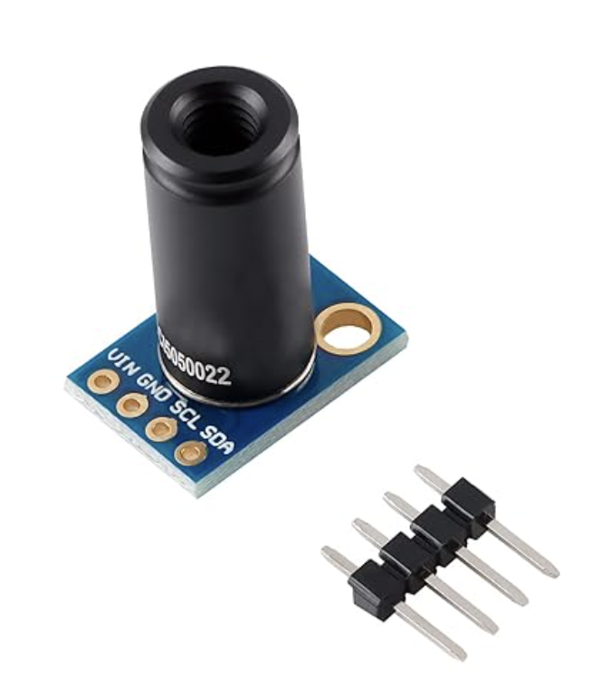
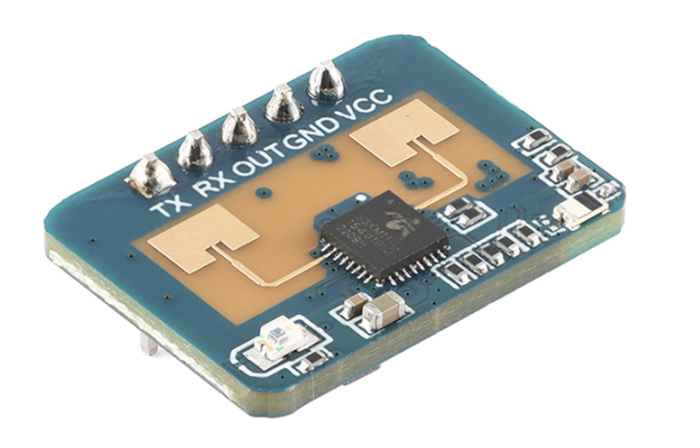
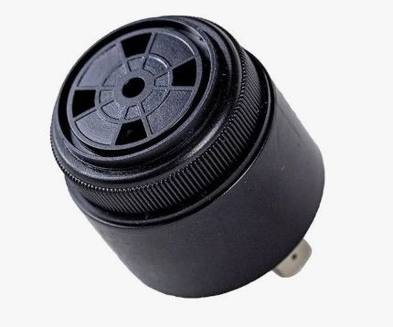
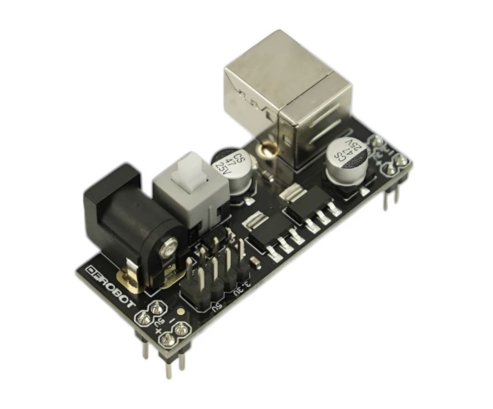
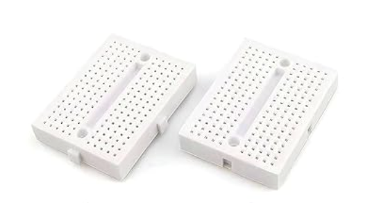
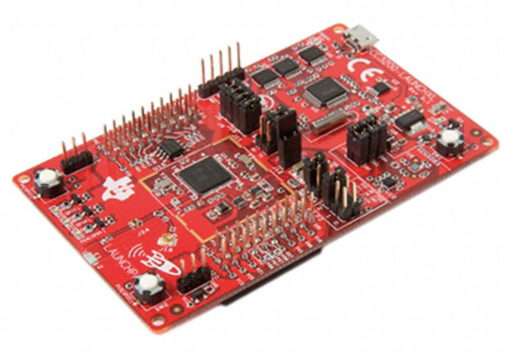
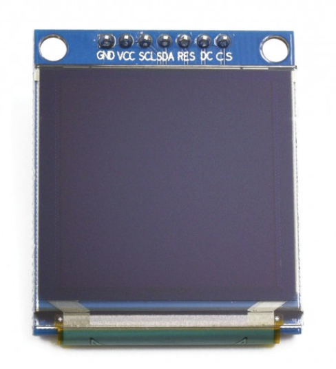

Project Overview
HADES is an embedded safety system designed to detect hazardous cooking situations before a fire occurs.
Over 350,000 house fires occur each year in the United States, and neglected cooking appliances are a major cause. Traditional systems like smoke alarms or sprinkler systems activate only after a fire has already begun.
HADES monitors both heat sources and human presence in a kitchen environment. If a heat source remains active while no human presence is detected for an extended period, the system can notify users through the internet or trigger a local alarm.
The goal is to provide an early warning system that allows users to intervene before a fire starts.
Why HADES?
Cooking related fires are among the most common causes of residential fires. Many occur simply because a stove or appliance is left unattended.
Existing safety devices only respond after the fire begins, which can already cause serious property damage or require emergency intervention.
HADES focuses on preventing these situations by detecting the conditions that lead to fires instead of reacting after the fact.
Sensors Used
MLX90614 Contactless IR Sensor
Measures heat levels from a stove or appliance without physical contact.
LD2410 24 GHz mmWave Radar
Detects whether a human is present in the kitchen while maintaining privacy.
Bill of Materials
| Component | Image | Qty | Price | Source |
|---|---|---|---|---|
| MLX90614 Contactless IR |  |
1 | $33.99 | Amazon |
| LD4210 24 GHz mmWave Radar |  |
1 | $9.99 | Amazon |
| Buzzer |  |
1 | $5.99 | Amazon |
| Breadboard PSU |  |
1 | $4.55 | Amazon |
| Mini Breadboard 6 Pack |  |
1 | $5.99 | Amazon |
| CC3200 LaunchPad |  |
1 | Lab Material | Texas Instruments |
| AdaFruit OLED Display |  |
1 | Lab Material | AdaFruit |
Total Cost: $60.51
Implementation Goals
- Acquire reliable readings from both sensors
- Detect heat and presence thresholds
- Trigger alarm when hazard detected without internet
- Reduce false alarms using sensor fusion
- Add graphical display interface
- Allow user configuration of thresholds
- Implement embedded machine learning to better classify hazardous situations
- Add remote user acknowledgement and device control through AWS
- Refine the interface and alarm logic for safer real-world operation
Project Timeline
Initial Planning and Proposal
Defined the core problem, project motivation, functional goals, and overall system architecture.
Component Research and Selection
Selected the CC3200 LaunchPad, IR temperature sensor, mmWave radar, OLED display, and alarm hardware.
Sensor Bring-Up
Began hardware setup and communication testing for the temperature sensor and human presence radar.
Embedded Communication Development
Integrated device communication across the required interfaces, including sensor reads and display output.
Detection Logic and Thresholding
Implemented the logic that compares heat and human presence conditions to identify possible unattended hazards.
Alarm and Notification Behavior
Working on the response flow so the system can notify the user online or activate the onboard alarm when needed.
System Tuning and False Alarm Reduction
Improve reliability using threshold tuning, filtering, and sensor fusion to better distinguish normal use from hazardous use.
Final Integration and Testing
Complete full system testing, verify alarm response, confirm sensor performance, and prepare the final demonstration.
Final Project Build
Final Design

Final Design of HADES